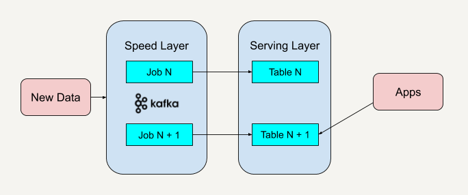
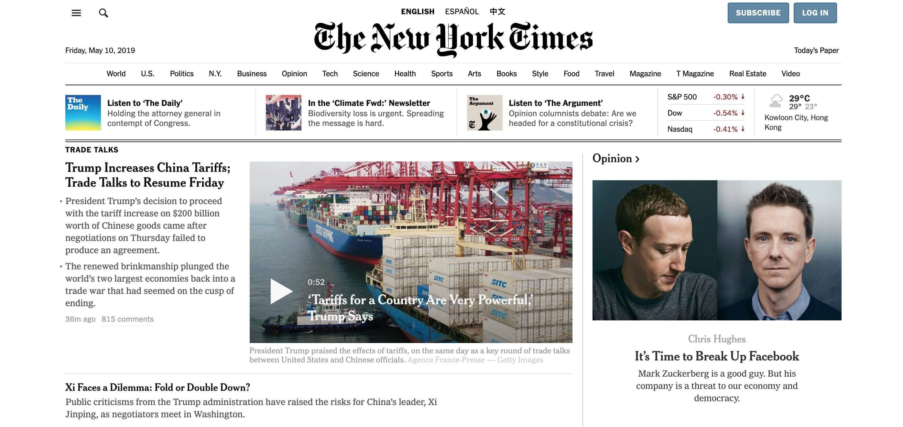
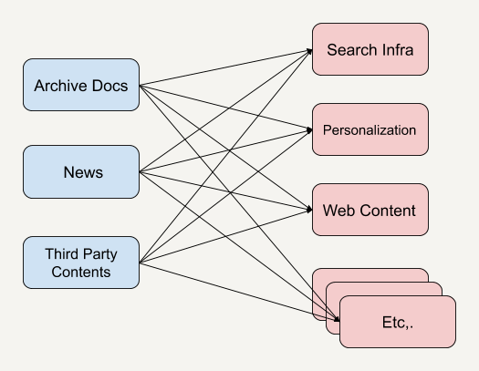
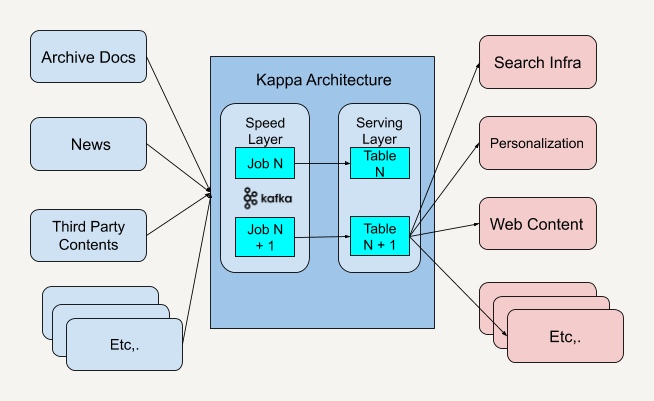

- 00 开篇词 从这里开始，带你走上硅谷一线系统架构师之路.md
- 01 为什么MapReduce会被硅谷一线公司淘汰？.md
- 02 MapReduce后谁主沉浮：怎样设计下一代数据处理技术？.md
- 03 大规模数据处理初体验：怎样实现大型电商热销榜？.md
- 04 分布式系统（上）：学会用服务等级协议SLA来评估你的系统.md
- 05 分布式系统（下）：架构师不得不知的三大指标.md
- 06 如何区分批处理还是流处理？.md
- 07 Workflow设计模式：让你在大规模数据世界中君临天下.md
- 08 发布_订阅模式：流处理架构中的瑞士军刀.md
- 09 CAP定理：三选二，架构师必须学会的取舍.md
- 10 Lambda架构：Twitter亿级实时数据分析架构背后的倚天剑.md
- 11 Kappa架构：利用Kafka锻造的屠龙刀.md
- 12 我们为什么需要Spark？.md
- 13 弹性分布式数据集：Spark大厦的地基（上）.md
- 14 弹性分布式数据集：Spark大厦的地基（下）.md
- 15 Spark SQL：Spark数据查询的利器.md
- 16 Spark Streaming：Spark的实时流计算API.md
- 17 Structured Streaming：如何用DataFrame API进行实时数据分析_.md
- 18 Word Count：从零开始运行你的第一个Spark应用.md
- 19 综合案例实战：处理加州房屋信息，构建线性回归模型.md
- 20 流处理案例实战：分析纽约市出租车载客信息.md
- 21 深入对比Spark与Flink：帮你系统设计两开花.md
- 22 Apache Beam的前世今生.md
- 23 站在Google的肩膀上学习Beam编程模型.md
- 24 PCollection：为什么Beam要如此抽象封装数据？.md
- 25 Transform：Beam数据转换操作的抽象方法.md
- 26 Pipeline：Beam如何抽象多步骤的数据流水线？.md
- 27 Pipeline IO Beam数据中转的设计模式.md
- 28 如何设计创建好一个Beam Pipeline？.md
- 29 如何测试Beam Pipeline？.md
- 30 Apache Beam实战冲刺：Beam如何run everywhere_.md
- 31 WordCount Beam Pipeline实战.md
- 32 Beam Window：打通流处理的任督二脉.md
- 33 横看成岭侧成峰：再战Streaming WordCount.md
- 34 Amazon热销榜Beam Pipeline实战.md
- 35 Facebook游戏实时流处理Beam Pipeline实战（上）.md
- 36 Facebook游戏实时流处理Beam Pipeline实战（下）.md
- 37 5G时代，如何处理超大规模物联网数据.md
- 38 大规模数据处理在深度学习中如何应用？.md
- 39 从SQL到Streaming SQL：突破静态数据查询的次元.md
- 40 大规模数据处理未来之路.md
- FAQ第一期 学习大规模数据处理需要什么基础？.md
- FAQ第三期 Apache Beam基础答疑.md
- FAQ第二期 Spark案例实战答疑.md
- 加油站 Practice makes perfect！.md
- 结束语 世间所有的相遇，都是久别重逢.md
11 Kappa架构：利用Kafka锻造的屠龙刀
你好，我是蔡元楠。
今天我要分享的主题是Kappa架构。
同样身为大规模数据处理架构，Kappa架构这把利用Kafka锻造的“屠龙刀”，它与Lambda架构的不同之处在哪里呢？
上一讲中，我讲述了在处理大规模数据时所用到经典架构，Lambda架构。我先来带你简要回顾一下。

Lambda架构结合了批处理和流处理的架构思想，将进入系统的大规模数据同时送入这两套架构层中，分别是批处理层（Batch Layer）和速度层（Speed Layer），同时产生两套数据结果并存入服务层。
批处理层有着很好的容错性，同时也因为保存着所有的历史记录，使产生的数据集具有很好的准确性。速度层可以及时地处理流入的数据，因此具有低延迟性。最终服务层将这两套数据结合，并生成一个完整的数据视图提供给用户。
Lambda架构也具有很好的灵活性，你可以将现有开源生态圈中不同的平台套入这个架构，具体请参照上一讲内容。
Lambda架构的不足
虽然Lambda架构使用起来十分灵活，并且可以适用于很多的应用场景，但在实际应用的时候，Lambda架构也存在着一些不足，主要表现在它的维护很复杂。
使用Lambda架构时，架构师需要维护两个复杂的分布式系统，并且保证他们逻辑上产生相同的结果输出到服务层中。
举个例子吧，我们在部署Lambda架构的时候，可以部署Apache Hadoop到批处理层上，同时部署Apache Flink到速度层上。
我们都知道，在分布式框架中进行编程其实是十分复杂的，尤其是我们还会针对不同的框架进行专门的优化。所以几乎每一个架构师都认同，Lambda架构在实战中维护起来具有一定的复杂性。
那要怎么解决这个问题呢？我们先来思考一下，造成这个架构维护起来如此复杂的根本原因是什么呢？
维护Lambda架构的复杂性在于我们要同时维护两套系统架构：批处理层和速度层。我们已经说过了，在架构中加入批处理层是因为从批处理层得到的结果具有高准确性，而加入速度层是因为它在处理大规模数据时具有低延时性。
那我们能不能改进其中某一层的架构，让它具有另外一层架构的特性呢？
例如，改进批处理层的系统让它具有更低的延时性，又或者是改进速度层的系统，让它产生的数据视图更具准确性和更加接近历史数据呢？
另外一种在大规模数据处理中常用的架构——Kappa架构（Kappa Architecture），便是在这样的思考下诞生的。
Kappa架构
Kappa架构是由LinkedIn的前首席工程师杰伊·克雷普斯（Jay Kreps）提出的一种架构思想。克雷普斯是几个著名开源项目（包括Apache Kafka和Apache Samza这样的流处理系统）的作者之一，也是现在Confluent大数据公司的CEO。
克雷普斯提出了一个改进Lambda架构的观点：
我们能不能改进Lambda架构中速度层的系统性能，使得它也可以处理好数据的完整性和准确性问题呢？我们能不能改进Lambda架构中的速度层，使它既能够进行实时数据处理，同时也有能力在业务逻辑更新的情况下重新处理以前处理过的历史数据呢？
他根据自身多年的架构经验发现，我们是可以做到这样的改进的。
在前面Publish–Subscribe模式那一讲中，我讲到过像Apache Kafka这样的流处理平台是具有永久保存数据日志的功能的。通过平台的这一特性，我们可以重新处理部署于速度层架构中的历史数据。
下面我就以Apache Kafka为例来讲述整个全新架构的过程。
第一步，部署Apache Kafka，并设置数据日志的保留期（Retention Period）。这里的保留期指的是你希望能够重新处理的历史数据的时间区间。
例如，如果你希望重新处理最多一年的历史数据，那就可以把Apache Kafka中的保留期设置为365天。如果你希望能够处理所有的历史数据，那就可以把Apache Kafka中的保留期设置为“永久（Forever）”。
第二步，如果我们需要改进现有的逻辑算法，那就表示我们需要对历史数据进行重新处理。
我们需要做的就是重新启动一个Apache Kafka作业实例（Instance）。这个作业实例将重头开始，重新计算保留好的历史数据，并将结果输出到一个新的数据视图中。我们知道Apache Kafka的底层是使用Log Offset来判断现在已经处理到哪个数据块了，所以只需要将Log Offset设置为0，新的作业实例就会重头开始处理历史数据。
第三步，当这个新的数据视图处理过的数据进度赶上了旧的数据视图时，我们的应用便可以切换到从新的数据视图中读取。
第四步，停止旧版本的作业实例，并删除旧的数据视图。
这个架构就如同下图所示。

与Lambda架构不同的是，Kappa架构去掉了批处理层这一体系结构，而只保留了速度层。你只需要在业务逻辑改变又或者是代码更改的时候进行数据的重新处理。
当然了，你也可以在我上面讲到的步骤中做一些优化。
例如不执行第4步，也就是不删除旧的数据视图。这样的好处是当你发现代码逻辑出错时可以及时回滚（Roll Back）到上一个版本的数据视图中去。又或者是你想在服务层提供A/B测试，保留多个数据视图版本将有助于你进行A/B测试。
在介绍完Kappa架构的概念后，我想通过一个实战例子，来和你进一步学习Kappa架构是如何应用在现实场景中的。
《纽约时报》内容管理系统架构实例
《纽约时报》是一个在美国纽约出版，在整个美国乃至全世界都具有相当影响力的日报。

《纽约时报》的内容管理系统收集、保存着各种各样来源的文档。这些文档有从第三方收集来的资料，也有自己报社编辑部所撰写的故事。当你访问《纽约时报》网站主页时，甚至能够查到162年前的新闻报道。
可想而知，要处理这么大规模的内容，并将这些内容提供于在线搜索、订阅的个性化推荐以及前端应用程序等等的服务，是一个非常棘手的任务。
我们先来看看他们曾经使用过的一个老式系统架构。

我们可以看到，这种系统架构是一种相当典型的基于API的架构，无论是在系统调度上还是使用场景上都存在着自身的不足。我来给你举一些例子。
不同的内容API可能由不同的团队开发，从而造成API有不同的语义，也有可能需要不同的参数。
调用不同API所得到的内容结果可能有不同的格式，在应用端需要重新进行规范化（Standardization）。
如果客户端上会实时推送一些新的热点新闻或者突发新闻（Breaking News），那么在上述基于API的架构中，想要实时获知新闻的话，就需要让客户端不停地做轮询操作（Polling）。轮询操作在这里指的是客户端定期地重复调用系统API来查看是否有新的新闻内容，这无疑增加了系统的复杂性。
客户端很难访问以前发布过的内容。即便我们知道这些已发布过的新闻列表需要从哪里获取，进行API调用去检索每个单独的新闻列表还是需要花很长的时间。而过多的API调用又会给服务器产生很大的负荷。
那现在你再来看看当《纽约时报》采取了Kappa架构之后，新的系统架构是什么样的。

首先，Kappa架构在系统调度这个层面上统一了开发接口。
你可以看到，中间的Kappa架构系统规范好了输入数据和输出数据的格式之后，任何需要传送到应用端的数据都必须按照这个接口输入给Kappa架构系统。而所有的应用端客户都只需要按照Kappa架构系统定义好的输出格式接收传输过来的数据。这样就解决了API规范化的问题。
我们再来看看增加了中间一层Kappa架构之后数据传输速度上的变化。
因为Apache Kafka是可以实时推送消息数据的，这样一来，任何传输进中间Kappa架构的数据都会被实时推送到接收消息的客户端中。这样就避免了在应用层面上做定期轮询，从而减少了延时。而对于重新访问或者处理发布过的新闻内容这一问题，还记得我之前和你讲述过的Kafka特性吗？只需要设置Log Offset为0就可以重新读取所有内容了。
在讲述完Kappa架构和它的应用实例之后，我想强调一下，Kappa架构也是有着它自身的不足的。
因为Kappa架构只保留了速度层而缺少批处理层，在速度层上处理大规模数据可能会有数据更新出错的情况发生，这就需要我们花费更多的时间在处理这些错误异常上面。
还有一点，Kappa架构的批处理和流处理都放在了速度层上，这导致了这种架构是使用同一套代码来处理算法逻辑的。所以Kappa架构并不适用于批处理和流处理代码逻辑不一致的场景。
小结
在最近两讲中，我们学习到了Lambda架构和Kappa架构这两种大规模数据处理架构，它们都各自有着自身的优缺点。我们需要按照实际情况来权衡利弊，看看我们在业务中到底需要使用到哪种架构。
如果你所面对的业务逻辑是设计一种稳健的机器学习模型来预测即将发生的事情，那么你应该优先考虑使用Lambda架构，因为它拥有批处理层和速度层来确保更少的错误。
如果你所面对的业务逻辑是希望实时性比较高，而且客户端又是根据运行时发生的实时事件来做出回应的，那么你就应该优先考虑使用Kappa架构。
思考题
在学习完Lambda架构和Kappa架构之后，你能说出Kappa架构相对Lambda架构的优势吗？
欢迎你把答案写在留言区，与我和其他同学一起讨论。
如果你觉得有所收获，也欢迎把文章分享给你的朋友。
© 2019 - 2023 Liangliang Lee. Powered by gin and hexo-theme-book.